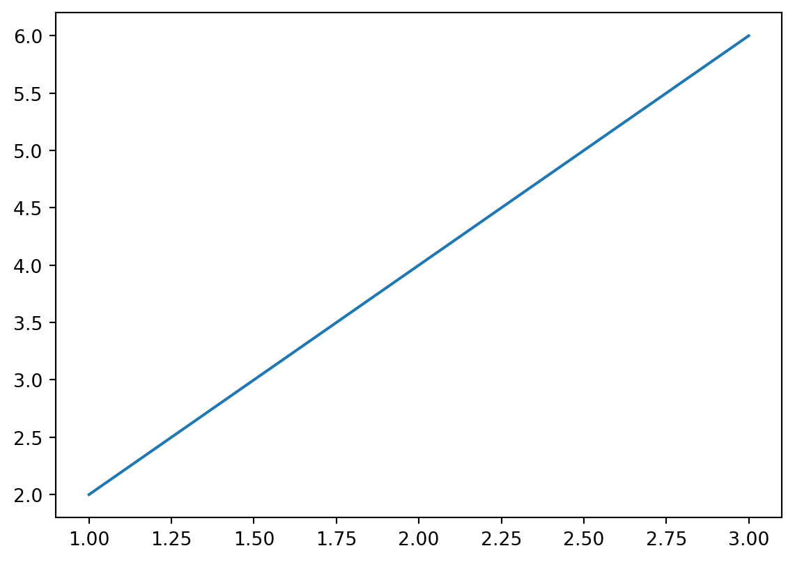
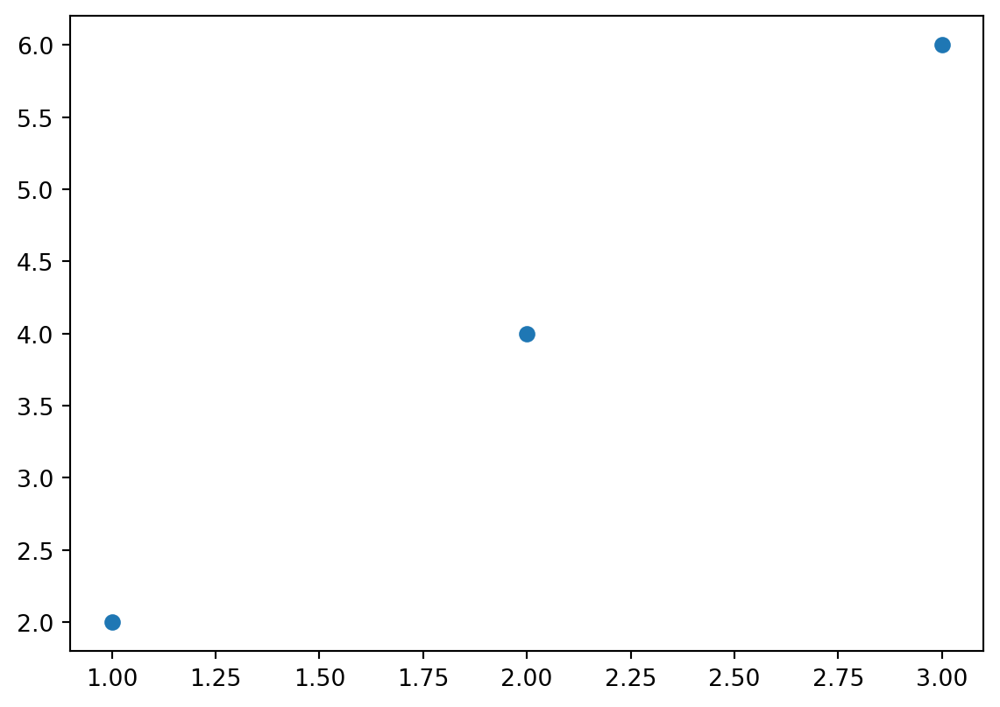
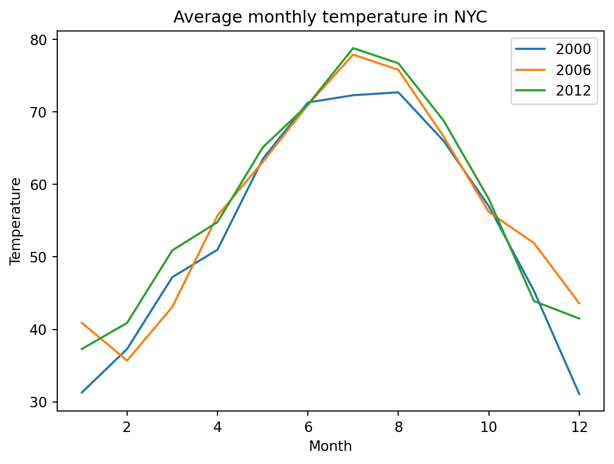
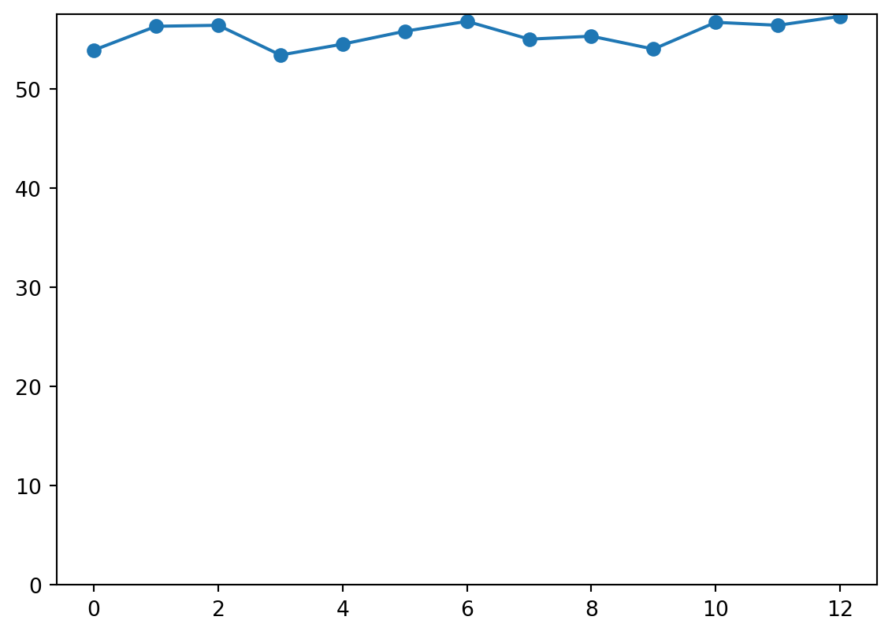
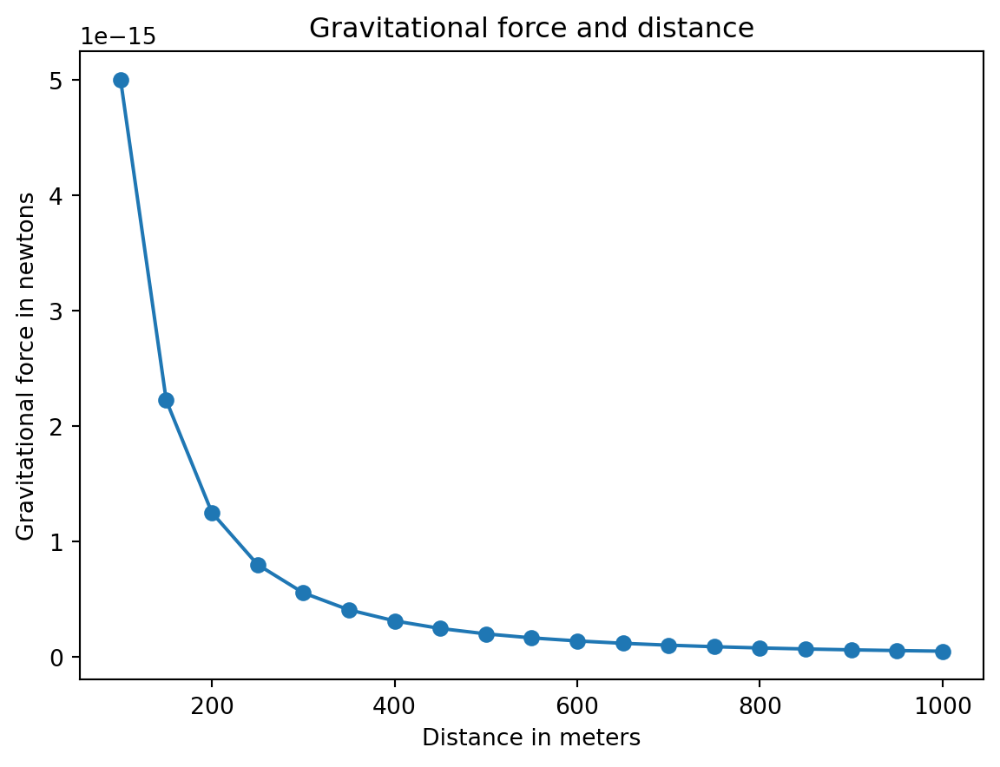
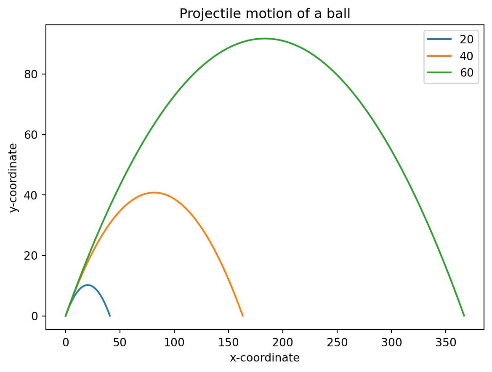
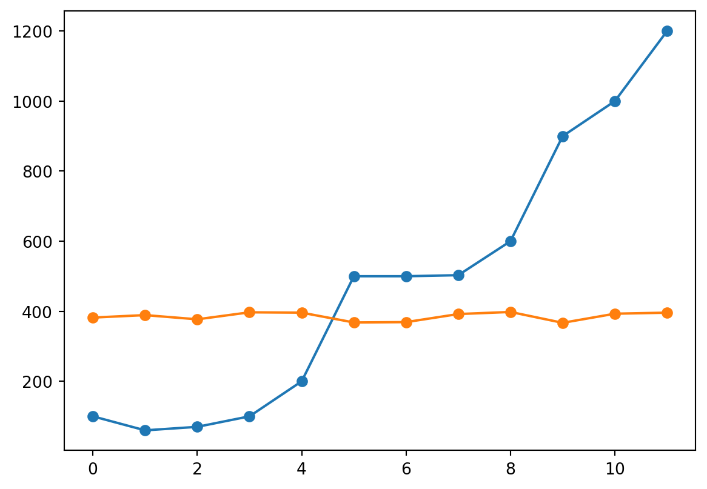
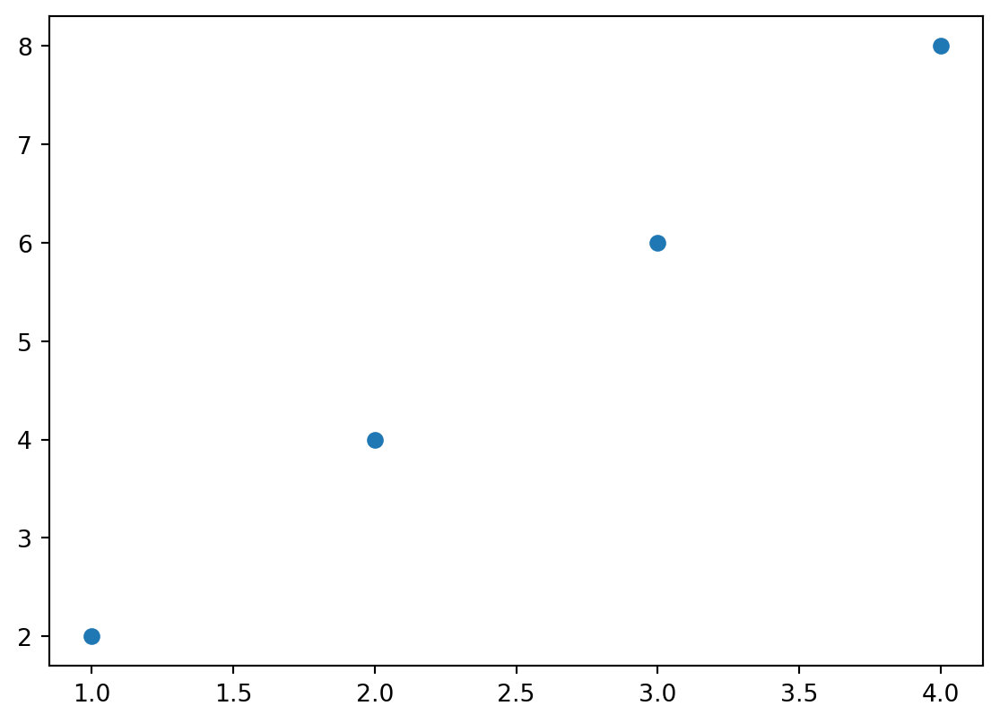
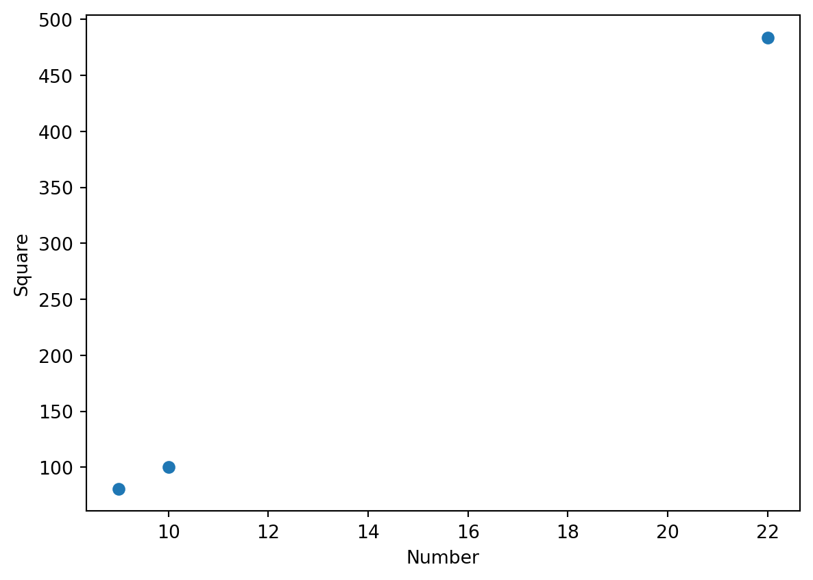

from fractions import Fraction
f = Fraction(3, 4)
fFraction(3, 4)El módulo fractions permite hacer operaciones con números racionales.
from fractions import Fraction
f = Fraction(3, 4)
fFraction(3, 4)f_1 = Fraction(3, 4) + 1 + 1.5
f_2 = Fraction(3, 4) + 1 + Fraction(1/4)
print(type(f_1), type(f_2))<class 'float'> <class 'fractions.Fraction'>Los números complejos se definen como a + bj, siendo j la unidad imaginaria, lo que se conoce como \(i\), o también se pueden definir con la función complex(), complex(a, b).
z = 2 + 3j
w = complex(3, 3)
print(z + w, z - w, z * w, z / w)(5+6j) (-1+0j) (-3+15j) (0.8333333333333334+0.16666666666666666j)El operador módulo
%y la división entera//, no son válidos para los complejos.
z_conj = z.conjugate() # conjugado de un complejo
z_mod = abs(z) # módulo de un complejo
print(z_conj, z_mod)(2-3j) 3.605551275463989Las excepciones, son los errores detectados mientras se ejecuta un programa. Estas son de diferentes tipos, como NameError, TypeError, ValueError…
Las excepciones se pueden gestionar con la sentencia try.
try:
a = float('3/4') # float(input('Enter a number: '))
except ValueError:
print('You entered an invalid number')You entered an invalid numberEl método is_integer() detecta si un número de tipo float es un entero.
print(1.1.is_integer())
print(1.0.is_integer())False
TrueLa función Fraction() también puede convertir strings en objetos de tipo Fraction.
try:
a = Fraction('2/0')
except ZeroDivisionError:
print('Invalid fraction')Invalid fractionLa función complex() también puede convertir string en complejos si están en la forma 'a+bj', no en la forma 'a + bj'.
try:
a = complex('2 + 4j')
except ValueError:
print('Invalid input')Invalid input'''
Comprobar si un número es factor de otro
'''
def is_factor(a, b):
try:
if b % a == 0: return True
else: return False
except ZeroDivisionError:
print('Zero no')
is_factor(2, 4)True'''
Encontrar los factores de un entero
'''
def factors(b):
for i in range(1, b+1):
if b % i == 0: print(i)
if __name__ == '__main__':
b = 142 # input('Your Number Please: ')
try:
b = float(b)
if b > 0 and b.is_integer():
factors(int(b))
else:
print('Please enter a positive integer')
except ValueError:
print('Only positive integers')1
2
71
142'''
Tabla de multiplicar
'''
def multi_table(a):
for k in range(1, 11):
print('{0} x {1} = {2:.1f}'.format(a, k, a*k))
if __name__ == '__main__':
a = 0.9 # input('Enter a number: ')
multi_table(float(a))0.9 x 1 = 0.9
0.9 x 2 = 1.8
0.9 x 3 = 2.7
0.9 x 4 = 3.6
0.9 x 5 = 4.5
0.9 x 6 = 5.4
0.9 x 7 = 6.3
0.9 x 8 = 7.2
0.9 x 9 = 8.1
0.9 x 10 = 9.0'''
Conversor de unidades de medida: Millas and Kilómetros
'''
def print_menu():
print('1. Kilometers to Miles')
print('2. Miles to Kilometers')
def km_miles():
km = 10 # float(input('Enter distance in kilometers: '))
miles = km / 1.609
print(f'Distance in miles: {miles:.2f}')
def miles_km():
miles = float(input('Enter distance in miles: '))
km = miles * 1.609
print(f'Distance in kilometers: {km}')
if __name__ == '__main__':
print_menu()
choice = '1' # input('Which conversion would you like to do?: ')
if choice == '1':
km_miles()
elif choice == '2':
miles_km()
1. Kilometers to Miles
2. Miles to Kilometers
Distance in miles: 6.22\[x_1 = \frac{-b+\sqrt{b^{2}-4ac}}{2a};\space x_2 = \frac{-b-\sqrt{b^2-4ac}}{2a}\] \[D = b^2-4ac\]
'''
Calcular las raices de una ecuación cuadrática
'''
def roots(a, b, c):
D = b**2 - 4*a*c
x_1 = (-b + D**0.5)/(2*a)
x_2 = (-b - D**0.5)/(2*a)
print(f'x1: {x_1:.4f}')
print(f'x2: {x_2:.4f}')
if __name__ == '__main__':
a = 2 # input('Enter a: ')
b = 1 # input('Enter b: ')
c = 2 # input('Enter c: ')
roots(float(a), float(b), float(c))x1: -0.2500+0.9682j
x2: -0.2500-0.9682jLas listas y las tuplas en Python sirven para guardar, almacenar, grupos de valores. La diferencia es que una vez creada una lista, a esta se le pueden añadir o cambiar valores, en cambio, las tuplas son fijas.
simple_list = [1, "Hi!", 3] # Se crea una lista
# Se accede a los elementos de la lista mediante sus índices
print(simple_list[0], simple_list[1], simple_list[2])
simple_list.append("This is a new item!") # Se añade un elemento a la lista
print(simple_list)1 Hi! 3
[1, 'Hi!', 3, 'This is a new item!']simple_tuple = (1, 2, 3) # Se crea una tupla
# Tambien se pueden usar índices negativos
print(simple_tuple[2], simple_tuple[-1])3 3l = ['Hi!', 'Hola!', 'Alo']
# Se itera una lista o una tupla con un bucle for
for item in l:
print(item)Hi!
Hola!
AloLa función enumerate() al que se le pasa una lista, o una tupla, y devuelve tuplas donde el primer elemento es el índice y el segundo es el elemento que toca en la lista: (i, list[i])
print(*[o for o in enumerate(l)])
# Se itera una lista y se obtiene a su vez el índice
for index, item in enumerate(l):
print(f'{index}. {item}')(0, 'Hi!') (1, 'Hola!') (2, 'Alo')
0. Hi!
1. Hola!
2. AloPara crear gráficas en Python se usa el paquete matplotlib.
from matplotlib import pylab
from pylab import plot, show
# pylab es un módulo del paquete matplotlib
# de pylab se importan las funciones plot() y show()
x_numb = [1, 2, 3]
y_numb = [2, 4, 6]
plot(x_numb, y_numb)
# plot() crea la gráfica
# el parámetro marker='o' hacer marcar los puntos:
# P1(x_numb[0], y_numb[0]), P2((x_numb[1], y_numb[1]))...
# la función retorna una lista con un objeto
# a ese objeto se le pueden modificar cosas...
# ..., por ejemplo el nombre de la gráfica
show() # show() muestra la gráfica en pantalla
plot(x, y, marker='o'), marker='o' hace marcar los puntos en pares, es decir, \(P_1(x_0, y_0)\), que sería P1 = (x[0], y[0]), en general \(P_i(x_{i-1}, y_{i-1})\).plot(x, y, 'o'), hace marcar solo esos puntos.plot(x_numb, y_numb, 'o')
Con las funciones title(), xlabel, ylabel y legend, se pueden modificar las gráficas.
from pylab import title, xlabel, ylabel, legend
# Temperaturas (en Fahrenheit) del Central Park, en Nueva York, entre 2000 y 2012.
nyc_temp_2000 = [31.3, 37.3, 47.2, 51.0, 63.5, 71.3, 72.3, 72.7, 66.0, 57.0, 45.3, 31.1]
nyc_temp_2006 = [40.9, 35.7, 43.1, 55.7, 63.1, 71.0, 77.9, 75.8, 66.6, 56.2, 51.9, 43.6]
nyc_temp_2012 = [37.3, 40.9, 50.9, 54.8, 65.1, 71.0, 78.8, 76.7, 68.8, 58.0, 43.9, 41.5]
months = range(1, 13)
years = range(2000, 2013)
plot(months, nyc_temp_2000, months, nyc_temp_2006, months, nyc_temp_2012)
title('Average monthly temperature in NYC')
xlabel('Month')
ylabel('Temperature')
legend([2000, 2006, 2012])<matplotlib.legend.Legend at 0x7f3ee67273a0>
La función axis() se pueden modificar los ejes de la gráfica.
from pylab import axis
nyc_temp = [53.9, 56.3, 56.4, 53.4, 54.5, 55.8, 56.8, 55.0, 55.3, 54.0, 56.7, 56.4, 57.3]
plot(nyc_temp, marker='o')
axis(ymin=0)(-0.6000000000000001, 12.6, 0.0, 57.495)
En vez de usar el módulo pylab, se puede usar pyplot.
'''
Simple plot using pyplot
'''
import matplotlib.pyplot as plt
def create_graph():
x_numbers = [1, 2, 3]
y_numbers = [2, 4, 6]
plt.plot(x_numbers, y_numbers)
plt.show()
if __name__ == '__main__':
create_graph()
Para exportar una gráfica se utiliza la función savefig().
from pylab import plot, savefig
x = [1, 2, 3]
y = [2, 4, 6]
plot(x, y)
savefig('mygraph.svg') # .pdf, .png, .svg...\[F = G\frac{m_1m_2}{r^2}\]
El primer cuerpo tendrá una masa \(m_1 = 0.5\space\rm{kg}\), y el segundo cuerpo tendrá una masa \(m_2=1.5\space\rm{kg}\). El valor de la Constante de Gravitación \(G = 6.674\times 10^{-11}\space\rm{ N m^2 kg^{-2}}\). Las distancias serán: \(100\space\rm{m}\), \(150\space\rm{m}\), \(200\space\rm{m}\), \(250\space\rm{m}\), \(300\space\rm{m}\)… hasta \(1000\space\rm{m}\).
'''
La relación entre la fuerza gravitacional y
la distancia entre dos cuerpos
'''
import matplotlib.pyplot as plt
# Dibuja la gráfica
def draw_graph(x, y):
plt.plot(x, y, marker='o')
plt.xlabel('Distance in meters')
plt.ylabel('Gravitational force in newtons')
plt.title('Gravitational force and distance')
plt.show()
def generate_F_r():
# Genera los valores para r
r = range(100, 1001, 50)
# Lista vacía para guardar los valores calculados de F
F = []
# Constante G
G = 6.674*(10**-11)
# Las dos masas
m1 = 0.5
m2 = 1.5
# Calcula el valor de la fuerza y lo añade a la lista, F
for dist in r:
force = G*(m1*m2)/(dist**2)
F.append(force)
# Se llama a la función draw_graph()
draw_graph(r, F)
if __name__ == '__main__':
generate_F_r()
Movimiento vertical: \(v_y = u\sin \theta -gt\)
Movimiento horizontal: \(v_x = u\cos \theta\)
Desplazamiento horizontal: \(s_x = u(\cos\theta)t\)
Desplazamiento vertical: \(s_y = u(\sin\theta)t-\frac{1}{2}gt^2\)
Tiempo en el punto más alto (\(v_y=0\)): \(t = \frac{u\sin\theta}{g}\)
Tiempo total: \(t_T = 2t = 2\frac{u\sin\theta}{g}\)
Se considera a una pelota lanzada con una velocidad inicial \(u = 5\space\rm{ms^{-1}}\) y un ángulo \(\theta=45^\circ\). El tiempo total será \(t_T = 2\frac{5\space\rm{ms^{-1}}\sin 45}{9.81\space\rm{ms^{-2}}}=0.72080...\space\rm{s}\). Para dibujar la trayectoria, se calcularán las coordenadas (\(s_x\) y \(s_y\)) cada \(0.001\space\rm{s}\).
'''
Dibujar la trayectoria de un cuerpo en movimiento parabólico
'''
from matplotlib import pyplot as plt
import math
def draw_graph(x, y):
plt.plot(x, y)
plt.xlabel('x-coordinate')
plt.ylabel('y-coordinate')
plt.title('Projectile motion of a ball')
def frange(start, final, increment):
numbers = []
while start < final:
numbers.append(round(start, 3))
start += increment
return numbers
def draw_trajectory(u, theta):
theta = math.radians(theta)
g = 9.81
# Tiempo total
t_T = 2*u*math.sin(theta)/g
# Encontrar los intervalos de tiempo
intervals = frange(0, t_T, 0.001)
# Lista de las coordenadas x e y
x = []
y = []
for t in intervals:
x.append(u*math.cos(theta)*t)
y.append(u*math.sin(theta)*t - 0.5*g*t*t)
draw_graph(x, y)
# if __name__ == '__main__':
# try:
# u = 25 # float(input('Enter the initial velocity (m/s): '))
# theta = 60 # float(input('Enter the angle of projection (degrees): '))
# except ValueError:
# print('You entered an invalid input')
# else:
# draw_trajectory(u, theta)
# plt.show
if __name__ == '__main__':
# Lista de tres diferentes velocidades iniciales
u_list = [20, 40, 60]
theta = 45
for u in u_list:
draw_trajectory(u, theta)
# Añade una legenda y muestra el gráfico
plt.legend(['20', '40', '60'])
plt.show()
La media se representa como \[\overline{x}=\frac{x_1 + x_2 + \dots + x_n}{n}\]
La función sum() suma una lista de números, y la función len() retorna la longitud de una lista.
'''
Calculando la media
'''
def calculate_mean(num):
s = sum(num)
n = len(num)
# Calcula la media
mean = s/n
return mean
if __name__ == '__main__':
donations = [100, 60, 70, 900, 100, 200, 500, 500, 503, 600, 1000, 1200]
mean = calculate_mean(donations)
n = len(donations)
print(f'Mean donation over the last {n} days is {mean}')Mean donation over the last 12 days is 477.75La mediana se define como \[med(x)=x_{(n+1)/2}\], si \(n\) es impar y como \[med(x)=\frac{x_{n/2}+x_{n/2+1}}{2}\], si \(n\) es par.
El método sort() ordena una lista en orden ascendente.
'''
Calcular la mediana
'''
def calculate_median(num):
n = len(num)
num.sort()
# Encontrar la mediana
if n % 2 == 0:
# si n es par
m1 = n/2
m2 = (n/2) + 1
# Convertir a un entero
m1 = int(m1) - 1
m2 = int(m2) - 1
median = (num[m1] + num[m2])/2
else:
m = (n+1)/2
# Convertir a entero
m = int(m) - 1
median = num[m]
return median
if __name__ == '__main__':
donations = [100, 60, 70, 900, 100, 200, 500, 500, 503, 600, 1000, 1200]
median = calculate_median(donations)
n = len(donations)
print(f'Median donation over the last {n} days is {median}')Median donation over the last 12 days is 500.0La moda es el valor más repetido dentro de un conjunto.
El método most_common() de una clase Counter devuelve una lista de tuplas de los elementos más comunes. El primer elemento de la lista es una tupla que contiene el elemento más repetido y el número de veces que se repite, el siguiente elemento de la lista es otra tupla que contiene el segundo elementos más repetido y el número de veces que se repite… etc.
from collections import Counter
list = [4, 2, 1, 3, 4]
c = Counter(list)
c.most_common() # Devuelve la lista completa
mode = c.most_common(1) # Devuelve solo el primer elemento de la lista
mode[0][0] # Se accede al primer, y único, elemento de la lista y luego se accede al primer elemento de la tupla.4'''
Calcular la moda
'''
def calculate_mode(num):
c = Counter(num)
numbers_freq = c.most_common()
max_count = numbers_freq[0][1]
modes = []
for n in numbers_freq:
if n[1] == max_count:
modes.append(n[0])
return modes
if __name__=='__main__':
scores = [5, 5, 5, 4, 4, 4, 9, 1, 3]
modes = calculate_mode(scores)
print(f'The mode(s) of the list of numbers are:')
for m in modes:
print(f'>>> {m}')The mode(s) of the list of numbers are:
>>> 5
>>> 4'''
Tabla de frecuencias para una lista de números
'''
# from pandas import DataFrame
def freq_table(num):
table = Counter(num)
numbers_freq = table.most_common()
numbers_freq.sort()
'''
# With pandas
t = DataFrame(table, columns=['Number', 'Frequency'])
print(t)
'''
print('Numer\tFrequency')
for n in numbers_freq:
print(f'{n[0]}\t{n[1]}')
print()
print('Numer\tFrequency')
for n in table.most_common():
print(f'{n[0]}\t{n[1]}')
if __name__=='__main__':
scores = [7, 8, 9, 2, 10, 9, 9, 9, 9, 4, 5, 6, 1, 5, 6, 7, 8, 6, 1, 10]
freq_table(scores)Numer Frequency
1 2
2 1
4 1
5 2
6 3
7 2
8 2
9 5
10 2
Numer Frequency
9 5
6 3
7 2
8 2
10 2
5 2
1 2
2 1
4 1'''
Encontrar el rango
'''
def find_range(numbers):
lowest = min(numbers) # Encontrar el elemento más pequeño
highest = max(numbers)
# Encontrar el rango
r = highest - lowest
return lowest, highest, r
if __name__ == '__main__':
donations = [100, 60, 70, 900, 100, 200, 500, 503, 600, 1000, 1200]
lowest, highest, r = find_range(donations)
print(f'Lowest: {lowest}; Highest: {highest}; Range: {r}')Lowest: 60; Highest: 1200; Range: 1140La varianza es la media de los cuadrados de las diferencias de los datos. \[\sigma ^2=\frac{\sum (x_1-\overline{x})^2}{n}\]
Una varianza alta implica que los valores están alejados de la media; lo contrario implica que están cerca de la media.
La desviación estandar se calcula obteniendo la raíz cuadrada de la varianza. \[\sigma = \sqrt{\frac{\sum (x_1-\overline{x})^2}{n}}\]
'''
Encontrar la varianza y la desviación estandar de una lista de números
'''
def calculate_mean(numbers):
s = sum(numbers)
N = len(numbers)
# Calcula la media
mean = s / N
return mean
def find_differences(numbers):
# Encontrar la media
mean = calculate_mean(numbers)
# Encontrar las diferencias de la media
diff = []
for num in numbers:
diff.append(num - mean)
return diff
def calculate_variance(numbers):
# Encontrar la lista de diferencias
diff = find_differences(numbers)
# Encontrar los cuadrados de las diferencias
squared_diff = []
for d in diff:
squared_diff.append(d**2)
# Encontrar la varianza
sum_squared_diff = sum(squared_diff)
variance = sum_squared_diff / len(numbers)
return variance
if __name__ == '__main__':
donations = [100, 60, 70, 100, 200, 500, 500, 503, 600, 900, 1000, 1200]
donations_prime = [382, 389, 377, 397, 396, 368, 369, 392, 398, 367, 393, 396]
variance = calculate_variance(donations)
variance_prime = calculate_variance(donations_prime)
print(f'The variance of the list of numbers is {variance:.4f}')
print(f'The variance of the list of numbers is {variance_prime:.4f}')
print()
std = variance**0.5
std_prime = variance_prime**0.5
print(f'The standard deviation of the list of numbers is {std:.4f}')
print(f'The standard deviation of the list of numbers is {std_prime:.4f}')The variance of the list of numbers is 141047.3542
The variance of the list of numbers is 135.3889
The standard deviation of the list of numbers is 375.5627
The standard deviation of the list of numbers is 11.6357import matplotlib.pyplot as plt
plt.plot(donations, marker='o')
plt.plot(donations_prime, marker='o')
\[r = \frac{n\sum xy - \sum x \sum y}{\sqrt{\Big(n\sum x^2 - \big(\sum x\big)^2\Big)\Big(n\sum y^2 - \big(\sum y\big)^2\Big)}}\]
La función zip() retorna pares de los elementos correspondientes en \(x\) y en \(y\).
list_1 = [1, 2, 3]
list_2 = [4, 5, 6]
for x, y in zip(list_1, list_2):
print(x, y)1 4
2 5
3 6def find_corre_x_y(x, y):
n = len(x)
# Encontrar la suma de los productos
prod = []
for xi, yi in zip(x, y):
prod.append(xi * yi)
sum_prod_x_y = sum(prod)
sum_x = sum(x)
sum_y = sum(y)
squared_sum_x = sum_x**2
squared_sum_y = sum_y**2
x_squared = []
y_square = []
for xi, yi in zip(x, y):
x_squared.append(xi**2)
y_square.append(yi**2)
# Encontrar la suma
x_squared_sum = sum(x_squared)
y_square_sum = sum(y_square)
# Usar la fórmula para calcular la correlación
numerator = n*sum_prod_x_y - sum_x*sum_y
denominator_term1 = n*x_squared_sum - squared_sum_x
denominator_term2 = n*y_square_sum - squared_sum_y
denominator = (denominator_term1*denominator_term2)**0.5
correlation = numerator / denominator
return correlation| Calificaciones | Notas en las pruebas de admisión |
|---|---|
| 90 | 85 |
| 92 | 87 |
| 95 | 86 |
| 96 | 97 |
| 87 | 96 |
| 87 | 88 |
| 90 | 89 |
| 95 | 98 |
| 98 | 98 |
| 96 | 87 |
import matplotlib.pyplot as plt
grades = [90, 92, 95, 96, 87, 87, 90, 95, 98, 96]
scores = [85, 87, 86, 97, 96, 88, 89, 98, 98, 87]
plt.plot(grades, scores, 'o')
find_corre_x_y(grades, scores)0.3183785775683751
| Calificaciones en Matemáticas | Notas en las pruebas de admisión |
|---|---|
| 83 | 85 |
| 85 | 87 |
| 84 | 86 |
| 96 | 97 |
| 94 | 96 |
| 86 | 88 |
| 87 | 89 |
| 97 | 98 |
| 97 | 98 |
| 85 | 87 |
math_grades = [83, 85, 84, 96, 94, 86, 87, 97, 97, 85]
plt.plot(math_grades, scores, 'o')
find_corre_x_y(math_grades, scores)0.9989633063220916
import matplotlib.pyplot as plt
x = [1, 2, 3, 4]
y = [2, 4, 6, 8]
plt.scatter(x, y)<matplotlib.collections.PathCollection at 0x7f3ee6306760>
# Encontrar la suma de número almacenados en un archivo
def sum_data(filename):
s = 0
with open(filename) as f:
for line in f:
s += float(line)
print(f'Sum of the numbers: {s}')
if __name__ == '__main__':
sum_data('data/mydata.txt')Sum of the numbers: 5733.0'''
Calcular la media de números almacenados en un archivo
'''
def read_data(filename):
numbers = []
with open(filename) as f:
for line in f:
numbers.append(float(line))
return numbers
def calculate_mean(numbers):
s = sum(numbers)
N = len(numbers)
mean = s/N
return mean
if __name__ == '__main__':
data = read_data('data/mydata.txt')
mean = calculate_mean(data)
print(f'Mean: {mean}')Mean: 477.75import csv
import matplotlib.pyplot as plt
def scatter_plot(x, y):
plt.scatter(x, y)
plt.xlabel('Number')
plt.ylabel('Square')
plt.show()
def read_csv(filename):
numbers = []
squared = []
with open(filename) as f:
reader = csv.reader(f)
next(reader)
for row in reader:
numbers.append(int(row[0]))
squared.append(int(row[1]))
return numbers, squared
if __name__ == '__main__':
numbers, squared = read_csv('data/numbers.csv')
scatter_plot(numbers, squared)
from sympy import Symbol, symbols # import SymPy
a = Symbol('x')
y, z = symbols('y, z')
a * (a + a) + 1 + (z + 2)*(3 + y)\(\displaystyle 2 x^{2} + \left(y + 3\right) \left(z + 2\right) + 1\)
# Para saber el símbolo
a.name'x'from sympy import factor, expand, pprint
x, y = symbols('x, y')
expr = x**2 - y**2
factor(expr) # versión factorizada
factors = factor(expr)
expand(factors) # versión extendida
pprint(factors)(x - y)⋅(x + y)expr = x**3 + 3*x**2*y + 3*x*y**2 + y**3
factors = factor(expr)
factors
expand(factors)\(\displaystyle x^{3} + 3 x^{2} y + 3 x y^{2} + y^{3}\)
\[x+\frac{x^2}{2}+\frac{x^3}{3}+\dots +\frac{x^n}{n}\]
'''
Imprimir la serie:
x + x**2 + x**3 + ... + x**n
____ ____ ____
2 3 n
'''
from sympy import Symbol, pprint, init_printing
def print_series(n):
# Iniciar impresión con el orden inverso
init_printing(order='rev-lex')
x = Symbol('x')
series = x
for i in range(2, n+1):
series += (x**i)/i
pprint(series)
if __name__ == '__main__':
n = 4 # input('Enter the number of terms you want in the series: ')
print_series(int(n)) 2 3 4
x x x
x + ── + ── + ──
2 3 4 \[x^2 + 2xy + y^2\]
expr = x*x + x*y + x*y + y*y
res = expr.subs({x: 1-y}) # Sustituye x=1-y en la expresión
res\(\displaystyle \left(1 - y\right)^{2} + 2 y \left(1 - y\right) + y^{2}\)
from sympy import simplify
simplify(res) # Simplifica la expresión\(\displaystyle 1\)
'''
Imprime la serie:
x + x**2 + x**3 + ... + x**n
____ ____ ____
2 3 n
'''
def print_series(n, x_value):
init_printing(order='rev-lex')
x = Symbol('x')
series = x
for i in range(2, n+1):
series += (x**i)/i
pprint(series)
# Evalúa la serie en x_value
series_value = series.subs({x:x_value})
print(f'Value of the series at {x_value:.2f}: {series_value:.2f}')
if __name__ == '__main__':
n = 5 # input('Enter the number of terms you want in the serie: ')
x_value = 1.2 # input('Enter the value of x at which you want to evaluate the series: ')
print_series(int(n), float(x_value)) 2 3 4 5
x x x x
x + ── + ── + ── + ──
2 3 4 5
Value of the series at 1.20: 3.51